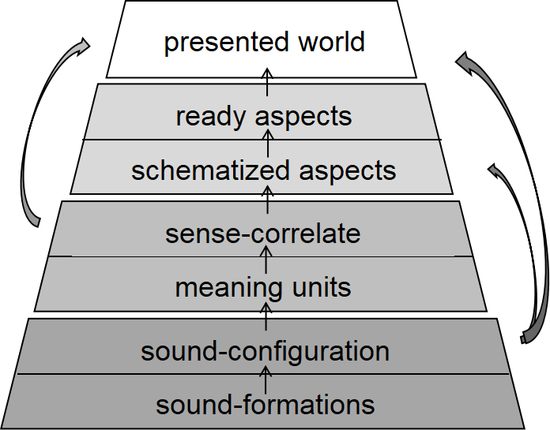

Relate the reading process to an engagement with phenomenological truth or the pure Cogito.
Direct serious critical attention to the reading process
The ultimate reality, the pure Cogito, emerges through a realization of the intentionality of objects in a mental state untainted by rational concepts and categories.
The reading of a literary text approximates such a phenomenological process because it effectively dissolves the barrier between subject and object.
In the course of reading, the object of print, the authorial consciousness, and the reading subject merge into a new, transpersonal consciousness.
Dynamics and consequence of reading(Roman Ingarden):
Dynamics of reading: Aesthetic concretization of the structural gestalt of a literary text
Pre-aesthetic analysis and the aesthetic concretization of literature
Every literary work is a stratified structure composed of four interrelated strata: sound-formations, meaningunits, schematized aspects, and presented world.

Ingarden's gestalt is different from the New Critical as well as the structuralist models of literary structure that were developed later.
It didn't entail operation of an overarching rhetorical principle such as paradox or irony, nor the proliferation of structuralist binarisms predicated on the langue /parole dichotomy.
Rather, it involves successive intentional acts of consciousness,or a process of phenomenological reduction, leading to the cognition of what Ingarden calls simple qualities or essences (sound configuration, sentence-correlate, ready-aspect) and derived essences (metaphysical quality) that emerges from the interface of these simple essences.
Ingarden attaches great importance to the reader’s role
Poulet:
Devotes himself to a study of aesthetic concretization as intentional acts of consciousness.
Redefines reading as an experience identical to the phenomenological process described by Merleau-Ponty.
Experience a new consciousness emerging in the virtual space of our own thought, the objects of print, and the authorial consciousness.
This new consciousness transcends the separation between subject and object, between the fictional and the actual, it approximates to the pure Cogito or the ultimate truth
Truth co-arises and is inseparably bound up with our perceptual experience exemplified by the reading of literature.
Wolfgang Iser:
Reading is a dynamic process of recreation
Reading is anything but a rigidly structured cognitive process